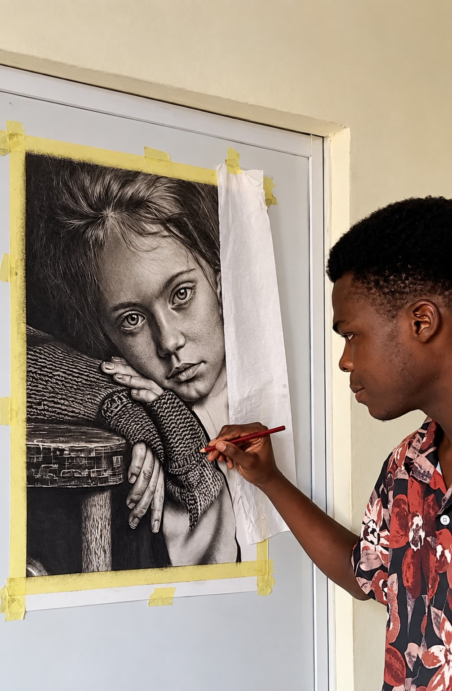

Temple Udofia
Nigerian visual artist working across portraiture, figurative drawing and conceptual art.

Profile
Temple Udofia is a Nigerian visual artist from Akwa Ibom State, raised in Uyo. His relationship with drawing began in childhood and continued alongside a strong interest in science, building and invention.
While studying Electrical and Electronics Engineering, he continued developing his artistic practice, particularly in charcoal and graphite portraiture. Today, he works across commissioned portraiture and self-directed conceptual art through The Temple Atelier.
Artist statement
I am drawn to the human experience—our emotions, expressions, stories and the moments we often cannot put into words. Through charcoal and graphite, I use portraiture and figurative drawing to explore these experiences, sometimes directly and sometimes through symbolism and surreal composition.
For me, likeness alone is not enough. I want a work to carry presence, meaning and something worth staying with. Above all, I want my drawings to create a moment of stillness—inviting the viewer to pause, feel, interpret and become absorbed in the story before them.